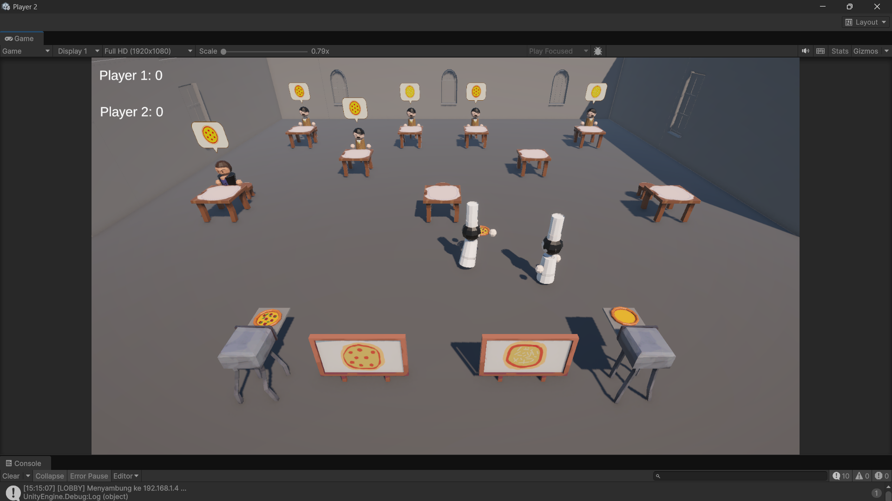
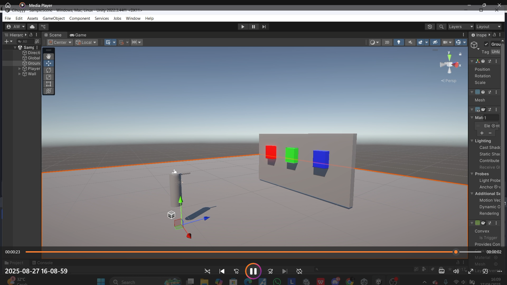
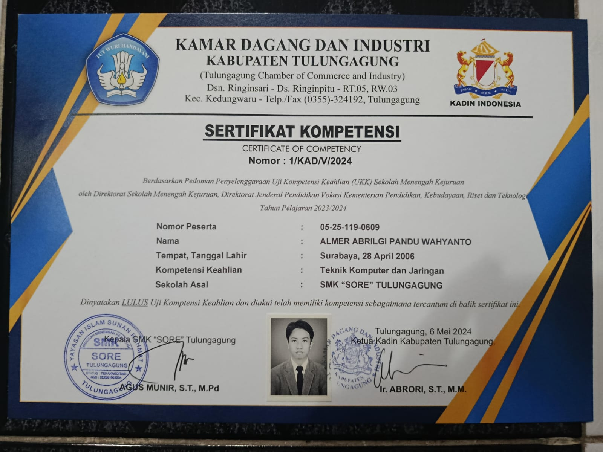

Pizza Rush
Proyek game pembuatan pizza dengan fokus pada sinkronisasi pemain, pesanan pelanggan, interaksi gameplay, dan skor multiplayer.
Lihat Detail →Mahasiswa Teknologi Game yang tertarik pada pemrograman game, arsitektur jaringan, dan pengalaman bermain. Saya juga menulis review untuk membahas desain gameplay serta narasi game.
Berawal dari latar belakang teknik jaringan dan komputer sejak SMK, saya melanjutkan perjalanan di bidang Teknologi Game dengan membawa ketertarikan pada pemrograman dan infrastruktur jaringan. Saya tertarik mempelajari bagaimana sistem jaringan bekerja, mulai dari konfigurasi dan routing hingga arsitektur server-client, serta bagaimana teknologi tersebut dapat diterapkan untuk mendukung pengalaman bermain multiplayer. Bagi saya, pengembangan game tidak hanya tentang menciptakan gameplay yang menarik, tetapi juga membangun sistem yang dapat berjalan dengan baik dan saling terhubung.
Di luar pengembangan game dan eksplorasi jaringan komputer, saya juga memiliki ketertarikan pada analisis industri game. Saya senang membahas mekanika permainan, desain naratif, serta world-building melalui ulasan (review) yang saya tulis. Melalui kegiatan tersebut, saya mencoba melihat game bukan hanya sebagai hiburan, tetapi juga sebagai hasil perpaduan antara pemrograman, rancangan sistem, dan pengalaman interaktif yang dirasakan pemain.
Game dan prototipe yang pernah saya kerjakan.

Proyek game pembuatan pizza dengan fokus pada sinkronisasi pemain, pesanan pelanggan, interaksi gameplay, dan skor multiplayer.
Lihat Detail →
Prototipe game horor 3D dengan aktivitas memasak, interaksi lingkungan, dan pengembangan sistem gameplay.
Lihat Detail →
Prototipe game shooter 3D yang dikembangkan sebagai bagian dari proses belajar pemrograman game.
Lihat Detail →Eksplorasi teknis di luar gameplay.
Praktik konfigurasi jaringan komputer, routing, dan simulasi lingkungan jaringan virtual menggunakan perangkat lunak yang relevan.
Pembelajaran sistem server-client, sinkronisasi objek, interaksi pemain, dan pertukaran state pada game multiplayer.
Eksplorasi dasar grafika komputer, termasuk transformasi matriks, pemetaan tekstur, dan rendering objek.
Pengalaman kerja serta sertifikasi kompetensi yang saya peroleh selama menempuh pendidikan.
Saya memperoleh pengalaman kerja di PT Telkom Indonesia dengan membantu pekerjaan administrasi dan pengolahan data. Pengalaman ini memberi saya gambaran mengenai proses dokumentasi dan pengelolaan data di lingkungan kerja profesional.
Sertifikat sebagai dokumentasi pengalaman praktik kerja lapangan di PT Telkom Indonesia.
 Lihat Sertifikat ↗
Lihat Sertifikat ↗
Sertifikat kompetensi ini saya peroleh setelah mengikuti Uji Kompetensi Keahlian (UKK) Teknik Komputer dan Jaringan (TKJ) Paket 2 pada tahun 2024, saat menempuh pendidikan di SMK.
Sertifikat ini menjadi bagian dari rekam jejak pembelajaran dan pengujian kompetensi saya di bidang jaringan komputer.

Lihat Sertifikat ↗Catatan mengenai gameplay, narasi, dan desain pengalaman bermain.
Arsip preview pra-rilis mengenai misteri dunia sci-fi, konsep naratif, visual, dan ekspektasi terhadap gameplay.
Baca Analisis →Membahas world-building, penulisan karakter, sistem gacha, kualitas visual, audio, dan strategi pertarungan turn-based.
Baca Review →Analisis perkembangan karakter Arthur Morgan, realisme dunia, desain audio, dan penggunaan mekanika untuk mendukung penceritaan.
Baca Review →Analisis presentasi agen rahasia, desain suara, perlengkapan, serta pengalaman stealth dan aksi.
Baca Review →